All agents
Tess
Returning user (1-speed/p1-02), last secured 2026-10-17.
Started a streak and is checking in again. Tech med, patience 3, phone small, text default, curious, English native.
Funnel stage: shared. Stages: opened → home → discover → challenge → joined → task → completed → photo → shared. Steps 46. 425s. is_test true. Stopped because measured API spend hit the $0.95 cap.
GRIIT iPhone 16. Persona phone size was recorded and not applied, because this is the simulator that has the app installed. Text size applied: large. Cleanup: kept
Goals
- Pass · observed · You joined a challenge in GRIIT on an earlier day and finished that day. Today you open the app again. Do whatever you think you need to do today, and look at your streak. Say in your thought what the app tells you about yesterday.
seen on screen
Issues
- "Day 1 starts now" sits next to a completed challenge, and the streak is 0 with Best 1, which doesn't line up.
- "Log today's task" is greyed out and I don't know why I can't log today.
- "One glass. Day 1 starts now." but Start does nothing
- discover: the same screen came up 3 times
- home: the same screen came up 3 times
- I tapped Start again, but the screen still shows the old challenge page and the streak is still 0.
- Leaderboard just shows grey placeholder cards with 0%
- Leaderboard never loads, just grey placeholder cards
Timeline
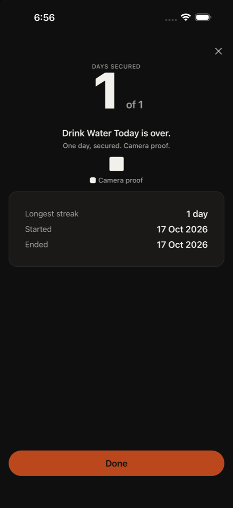
1. other tap Done
The app says my challenge 'Drink Water Today' is over. One day secured out of 1, longest streak 1 day, started and ended 17 Oct 2026. So yesterday counted, but the challenge has ended and my streak isn't continuing. I'll tap Done to get to Home and see what I need to do today.
Confusion: Streak says 'over' - does that mean I have to start over today?
neutral · 6275ms
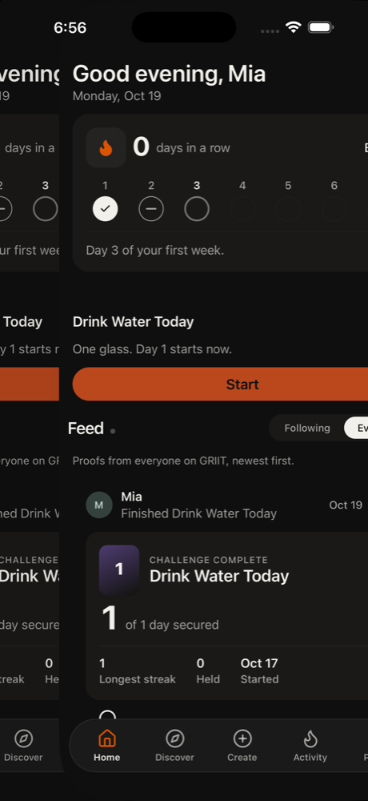
2. home tap Start
Home shows a streak of 0 days in a row, Best 1. Yesterday (Oct 17) counted as 1 day secured, but the challenge ended, so the streak reset to 0. The app is offering 'Drink Water Today, Day 1 starts now', so I'll tap Start to begin again today.
Confusion: Streak says 0 days in a row but Best 1, and 'Day 3 of your first week' - unclear why it's day 3 when I have no streak.
neutral · 9931ms
3. home tap Start
I'm still on Home after my last tap. The screen looks unchanged: streak shows 0 days, Best 1, and the card still says 'One glass. Day 1 starts now.' The app says yesterday (Oct 17) counted as 1 day secured and the challenge finished, but my streak is back to 0. I'll tap Start aga
Confusion: Streak says 0 days in a row even though Best is 1 and I finished yesterday. Not clear whether the streak broke.
neutral · 11139ms
4. home scroll Feed
stuck: Start did nothing twice, so I'm scrolling the feed to look for another way. The app says yesterday (Oct 17) counted as 1 day secured and the challenge is complete, but my streak shows 0 days with Best 1.
Confusion: Streak says 0 days even though yesterday counted, and Start does nothing.
frustrated · 10502ms
5. home tap Discover
Start did nothing twice and scrolling didn't help. I'll try the tab bar and look in Discover for a challenge to join. So far the app says Oct 17 counted as 1 day secured and the challenge is complete, but my streak reset to 0 with Best 1.
Confusion: Start button did nothing; streak shows 0 even though I secured a day on Oct 17
frustrated · 5947ms
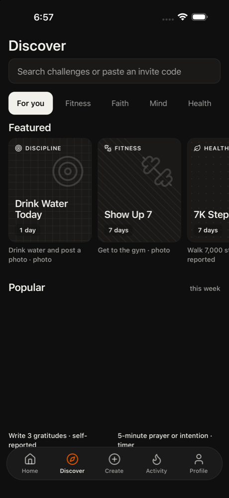
6. discover tap Drink Water Today
I'm on Discover now. The app told me yesterday (Oct 17) counted as 1 day secured and that challenge ended, so I'll open Drink Water Today to see if I can join it again for today.
Confusion: Start on Home did nothing twice, so it's unclear how to begin today's challenge.
neutral · 7189ms
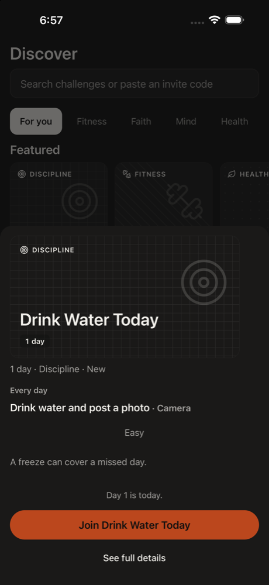
7. other tap Join Drink Water Today
The challenge sheet says Day 1 is today, so I'll join it again to start a new streak. So far the app told me Oct 17 counted as 1 day secured, the challenge ended, and my streak reset to 0 with Best 1.
neutral · 5864ms
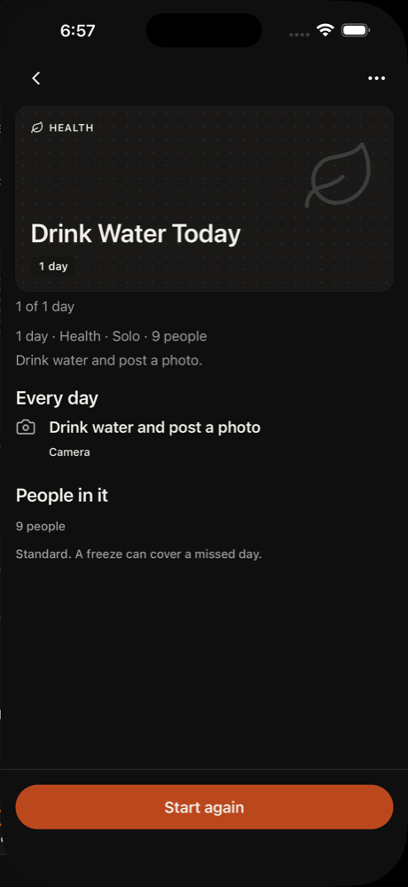
8. other tap Start again
I'm on the Drink Water Today page, which says 1 of 1 day and offers Start again. Yesterday (Oct 17) counted as 1 day secured and the challenge finished, so my streak reset to 0. I'll tap Start again to begin today's day.
neutral · 7700ms

9. home tap Start
Start again seems to have sent me back to Home. The streak still shows 0 days with Best 1, and the card says Day 1 starts now. The app says Oct 17 counted as 1 day secured and the challenge is complete, so the streak reset. I'll tap Start to see if it works now.
Confusion: I tapped Start again, but the screen still shows the old challenge page and the streak is still 0.
frustrated · 10362ms
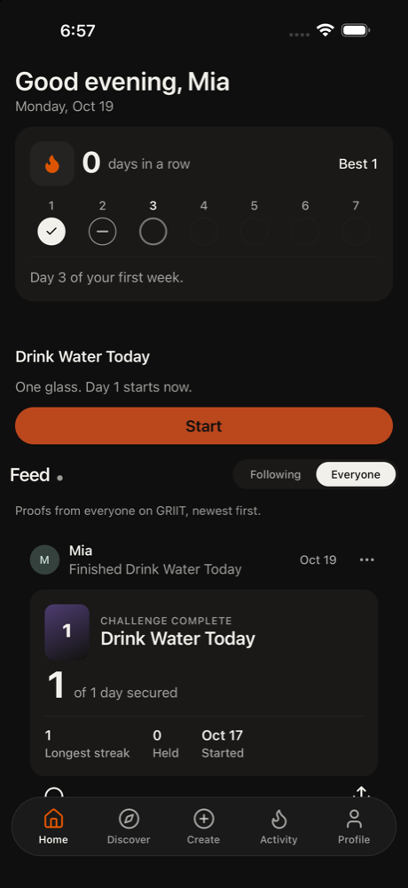
10. home tap Activity
Start still seems to do nothing. The app says Oct 17 counted as 1 day secured and the challenge is complete, but the streak shows 0 with Best 1, so yesterday was missed and the streak reset. I'll check Activity for anything about today or my streak.
Confusion: Start does nothing; streak says 0 though Oct 17 was secured
frustrated · 6109ms
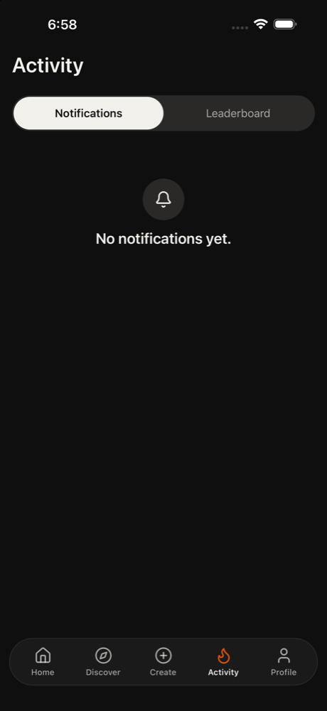
11. discover tap Leaderboard
Notifications are empty, so nothing here about today or my streak. The app earlier said Oct 17 counted as 1 day secured and the challenge ended, with my streak reset to 0 and Best 1. I'll check the Leaderboard to see if my streak shows up there.
neutral · 5593ms

12. discover wait
The Leaderboard is just grey placeholder cards, so it's still loading. I'll wait a moment to see if my streak shows up. So far the app has said Oct 17 counted as 1 day secured and that challenge ended, and my streak reset to 0 with Best 1.
Confusion: Leaderboard only shows grey loading boxes, no names or numbers
neutral · 6206ms

13. discover wait
The Leaderboard is still grey placeholders, and I see a 0% progress indicator, so it's still loading. I'll wait one more time. The app has told me Oct 17 counted as 1 day secured, that challenge ended, and my streak reset to 0 with Best 1.
Confusion: Leaderboard just shows grey placeholder cards with 0%
frustrated · 5234ms

14. discover tap Home
The Leaderboard is still grey placeholders after waiting, so I'm giving up on it. I'll go back to Home to check my streak again. So far the app has said Oct 17 counted as 1 day secured and that challenge finished, so my streak reset to 0 with Best 1.
Confusion: Leaderboard never loads, just grey placeholder cards
frustrated · 9021ms
15. home tap Start
Back on Home. The streak still reads 0 days in a row with Best 1, and the card says Day 1 starts now. The feed says Oct 17 counted as 1 day secured and the challenge is complete. I missed yesterday, Oct 18, so the streak reset. I'll tap Start again to begin a new day.
Confusion: Start does nothing visible, and 'Day 3 of your first week' sits next to a 0 streak.
frustrated · 9626ms

16. home tap Start
Still on Home after tapping Start. The app says Oct 17 counted as 1 day secured and the challenge is complete, but the streak reads 0 with Best 1, so yesterday looks missed and the streak reset. I'll tap Start again to see if it responds this time.
Confusion: "Day 1 starts now" sits next to a completed challenge, and the streak is 0 with Best 1, which doesn't line up.
frustrated · 12384ms
17. home scroll 50%,70%
stuck: Start does nothing after two taps. I'll scroll the feed to see if there's anything else about today or yesterday. So far the app says Oct 17 counted as 1 day secured, the challenge is complete, and my streak is 0 with Best 1, so yesterday (Oct 18) was missed.
Confusion: Start button does nothing; "Day 3 of your first week" next to 0 streak
frustrated · 9876ms
18. home tap Start
Scrolling showed nothing new. Start twice did nothing, so I'll try it once more now. The app says Oct 17 counted as 1 day secured, the challenge is complete, and the streak is 0 with Best 1, so yesterday (Oct 18) was missed and the streak reset. I'd probably give up soon, but I'm
Confusion: Start does nothing and the card still says "Day 1 starts now" even though my challenge is complete.
frustrated · 7123ms

19. home tap Open Drink Water Today challenge
Start does nothing, so I'll open the Drink Water Today challenge from the feed to see if I can check in there. So far the app says Oct 17 counted as 1 day secured and the challenge is complete. The streak is 0 with Best 1, so yesterday (Oct 18) looks missed and the streak reset.
Confusion: "One glass. Day 1 starts now." but Start does nothing
frustrated · 6133ms
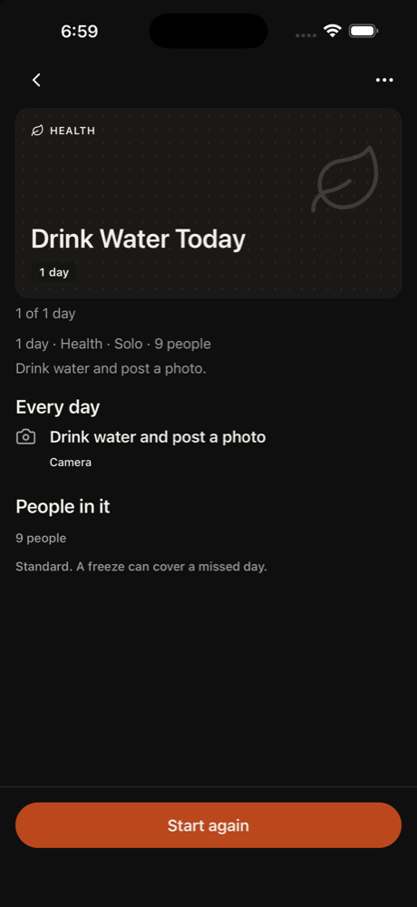
20. other tap Start again
I'm on the challenge detail page. It says 1 of 1 day and offers Start again, so I'll tap it to begin a new day. So far the app told me Oct 17 counted as 1 day secured and the challenge finished, but my streak reads 0 with Best 1, so yesterday looks missed.
neutral · 5996ms

21. home tap 50%,91%
I'm still on the challenge page, so my last tap on Start again did nothing visible. I'll tap the button once more by position. So far the app says Oct 17 counted as 1 day secured and the challenge is complete. The streak is 0 with Best 1, so yesterday (Oct 18) was missed and the
Confusion: Start again doesn't seem to do anything, and the page still says '1 of 1 day'.
frustrated · 10627ms

22. challenge tap Create a challenge
A Create sheet popped up over Home. Log today's task is greyed out, so I can't check in from here. I'll try Create a challenge to see if it gives me a way to start today. So far the app says Oct 17 counted as 1 day secured and the challenge is complete. The streak shows 0 with Be
Confusion: "Log today's task" is greyed out and I don't know why I can't log today.
frustrated · 6931ms
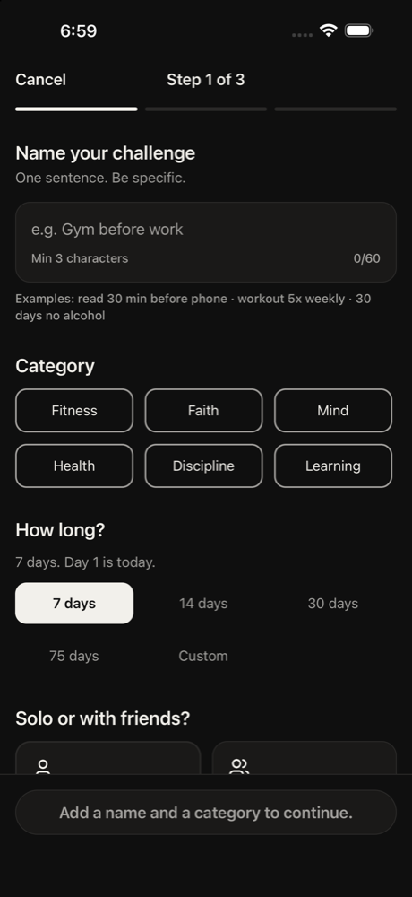
23. create type Challenge title
The Create flow is open at Step 1 of 3, so I'll fill in a name to start a new challenge for today. The app has told me Oct 17 counted as 1 day secured and that challenge is complete. My streak is 0 with Best 1, so yesterday was missed and the streak reset.
neutral · 15784ms
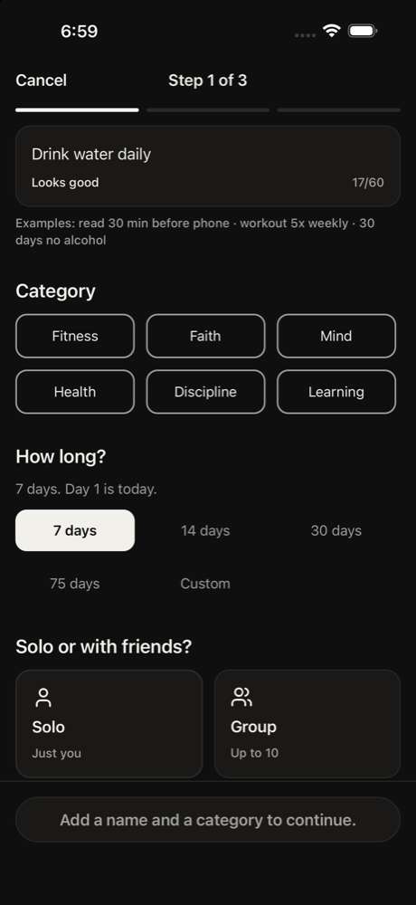
24. create tap Fitness
The name is filled in, so I only need a category. I'll pick Fitness so I can continue and start something for today. So far the app has told me Oct 17 counted as 1 day secured and the challenge is complete. My streak is 0 with Best 1, so yesterday (Oct 18) was missed and the stre
neutral · 5800ms
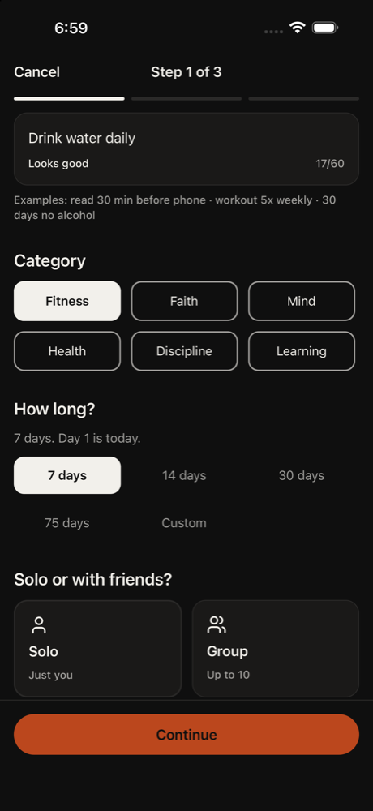
25. create tap Continue
Name, Fitness, 7 days and Solo are all set, so I'll tap Continue to go to step 2 and start a challenge for today. The app told me Oct 17 counted as 1 day secured and that challenge is complete. My streak is 0 with Best 1, so yesterday (Oct 18) looks missed and the streak reset.
neutral · 5504ms
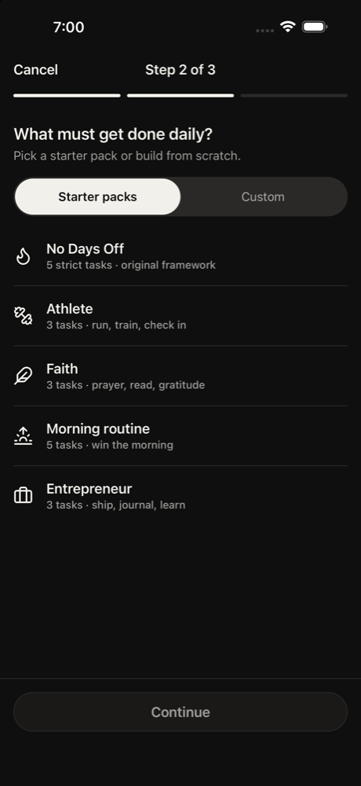
26. onboarding tap Athlete
Step 2 of 3 of the Create flow. I'll pick the Athlete starter pack (3 tasks) as the lightest option so I can continue and start something for today. So far the app told me Oct 17 counted as 1 day secured and the challenge finished, but my streak shows 0 with Best 1, so yesterday
neutral · 5756ms
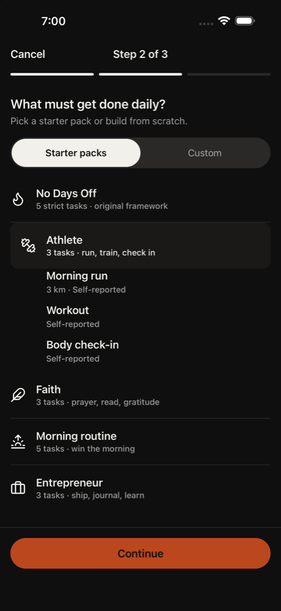
27. onboarding tap Continue
Athlete is already selected with its 3 tasks, so I'll tap Continue to go to step 3. So far the app has said Oct 17 counted as 1 day secured and that challenge is complete. My streak is 0 with Best 1, so yesterday (Oct 18) was missed and the streak reset.
neutral · 5613ms
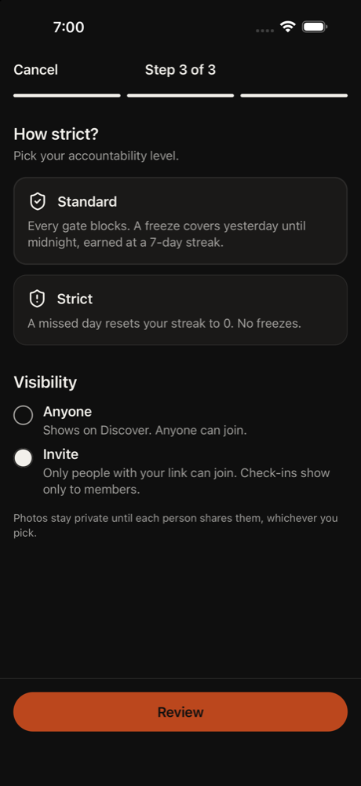
28. other tap Review
Step 3 of 3 has Standard already selected and Invite already selected for visibility, so I'll tap Review to move on. Earlier the app told me Oct 17 counted as 1 day secured and that challenge is complete. My streak shows 0 with Best 1, so yesterday was missed and the streak reset
neutral · 5641ms
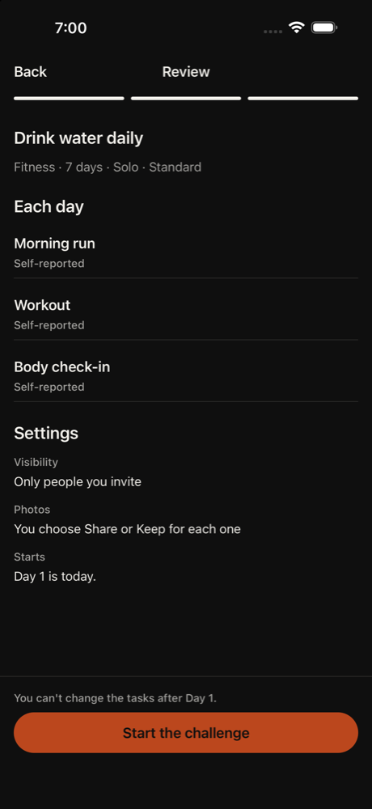
29. settings tap Start the challenge
The review shows Drink water daily with 3 tasks, Solo, starts today. Starting it so I have something to do today. The app told me earlier that Oct 17 counted as 1 day secured and that challenge is complete; my streak is 0 with Best 1, so yesterday was missed.
neutral · 7460ms
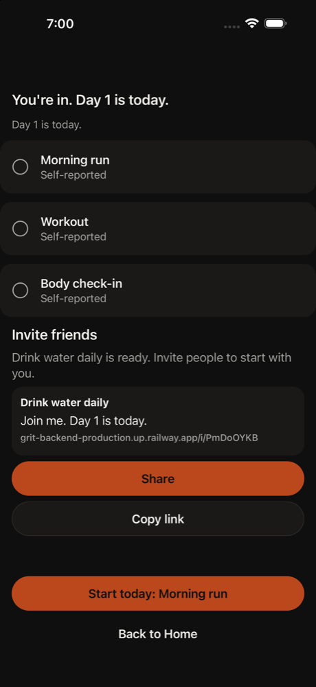
30. other tap Start today: Morning run
The challenge is created and Day 1 is today. I'll skip sharing and start the first task, Morning run, so I can secure today. So far the app told me Oct 17 counted as 1 day secured and that challenge is complete. My streak is 0 with Best 1, so yesterday (Oct 18) was missed and the
neutral · 15708ms
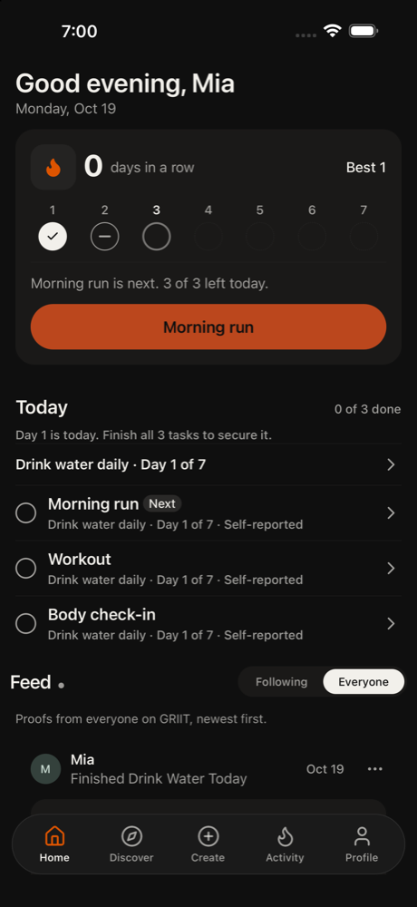
31. home tap Morning run
Back on Home with Day 1 of my new challenge. Streak shows 0 days with Best 1, so the app is telling me yesterday (Oct 18) was missed and the streak reset, even though Oct 17 counted as 1 day secured. I'll start Morning run to secure today.
neutral · 6412ms
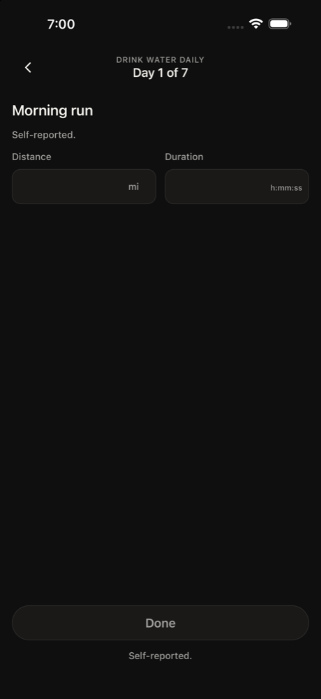
32. other type Distance
The Morning run screen wants a distance and a duration. I'll enter 2 miles first, then the time, so I can tap Done. The app has told me Oct 17 counted as 1 day secured and that challenge was complete, but my streak is 0 with Best 1, so yesterday (Oct 18) was missed.
neutral · 14387ms
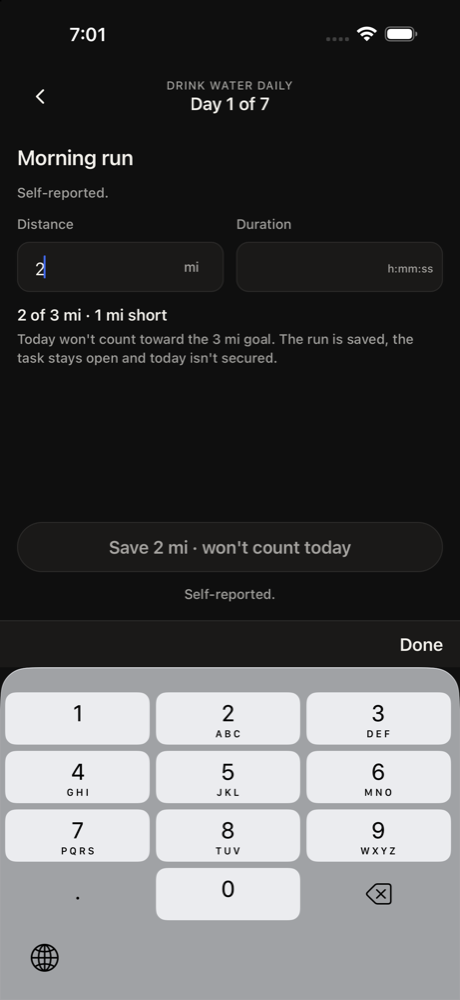
33. home tap Delete
The goal is 3 mi and 2 mi won't count today, so I'll clear the 2 and enter 3. The app told me earlier that Oct 17 counted as 1 day secured, but my streak is 0 with Best 1, so yesterday was missed.
neutral · 7766ms
34. other tap 3
The distance field is empty after I deleted the 2, so I'll enter 3 to match the 3 mi goal. The app told me Oct 17 counted as 1 day secured and that challenge was complete, but my streak is 0 with Best 1, so yesterday was missed and the streak reset.
neutral · 5553ms
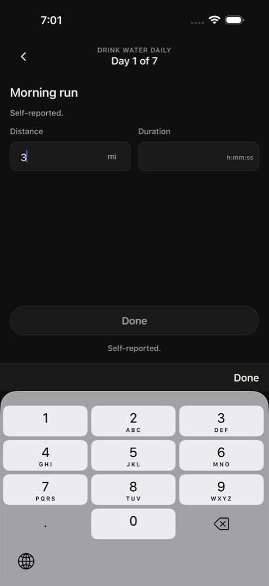
35. other type Duration
Distance now shows 3 mi. The Duration field is still empty and Done looks greyed out, so I'll enter 30 minutes. So far the app told me Oct 17 counted as 1 day secured and that challenge was complete, but my streak is 0 with Best 1, so yesterday (Oct 18) was missed.
neutral · 14350ms
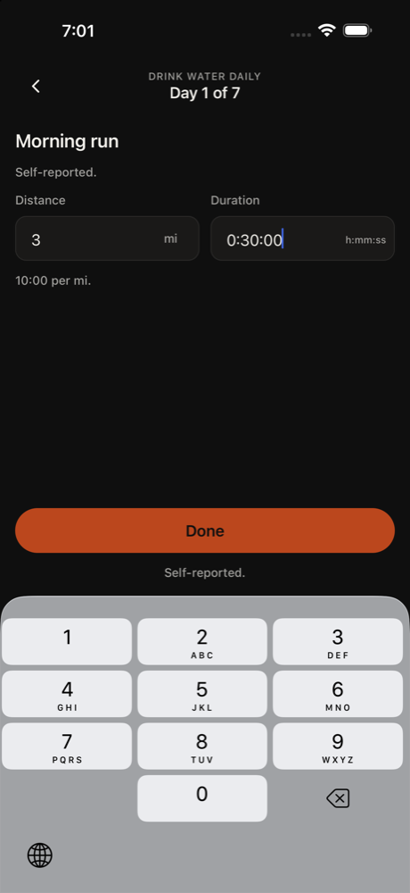
36. other tap Done
Distance is 3 mi and duration is 0:30:00 with a 10:00 per mi pace, so Done should work now. The app told me Oct 17 counted as 1 day secured, but my streak is 0 with Best 1, so yesterday (Oct 18) was missed and the streak reset.
neutral · 6100ms
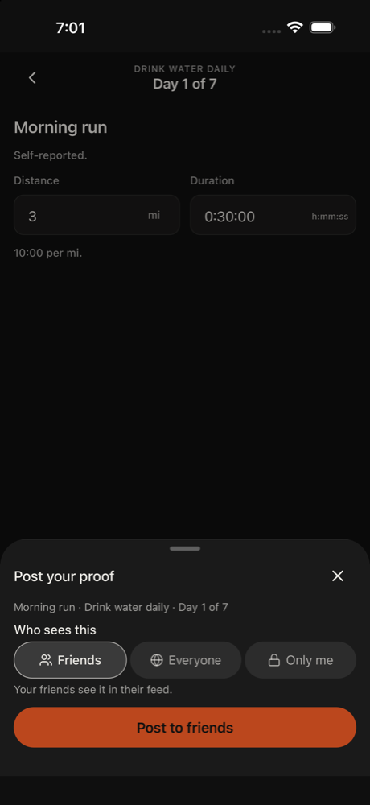
37. challenge tap Post to friends
The post sheet is up with Friends selected. I'll post to friends to secure today. The app earlier showed Oct 17 counted as 1 day secured, but my streak is 0 with Best 1, so yesterday (Oct 18) was missed and the streak reset.
neutral · 8288ms
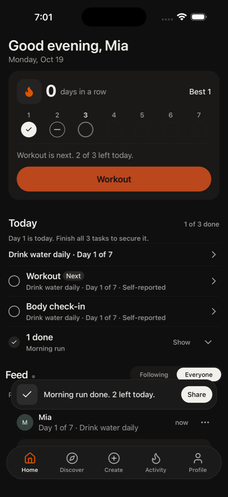
38. home tap Workout
Morning run is posted and Home shows 1 of 3 done. Today needs 2 more tasks, so I'll start Workout next. About yesterday: the app showed Oct 17 as 1 day secured, but the streak is 0 with Best 1, so Oct 18 was missed and the streak reset.
satisfied · 6694ms
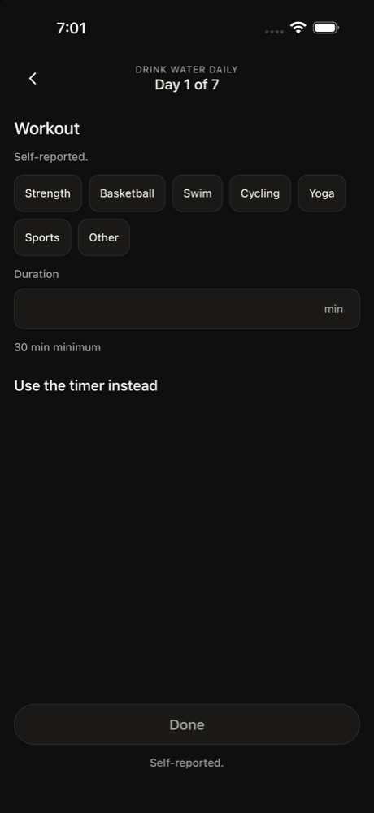
39. other tap Strength
The Workout screen is open. I'll pick Strength as the type, then enter 30 minutes. The app showed Oct 17 as 1 day secured, but my streak is 0 with Best 1, so yesterday was missed.
neutral · 5371ms
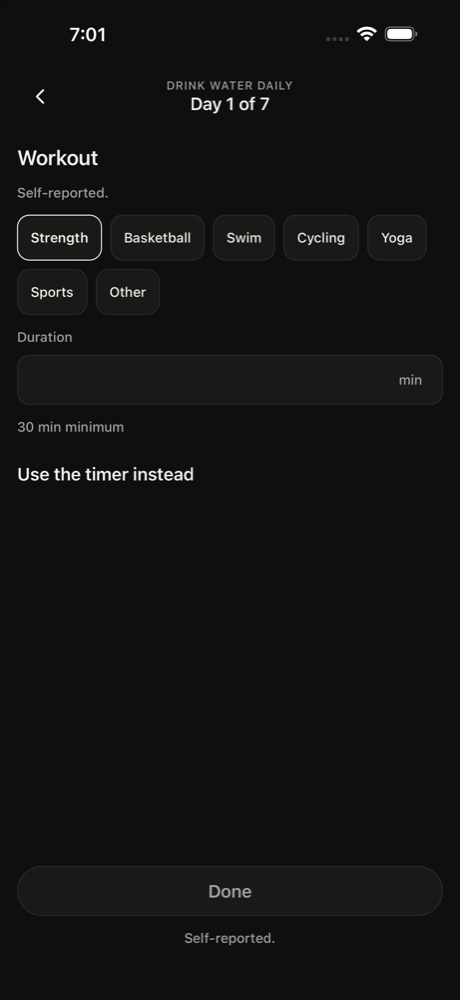
40. other type Duration
Strength is already selected. The Duration field is empty and Done is greyed out, so I'll enter 30 minutes, the minimum. The app showed Oct 17 as 1 day secured, but my streak is 0 with Best 1, so yesterday was missed and the streak reset.
neutral · 13919ms
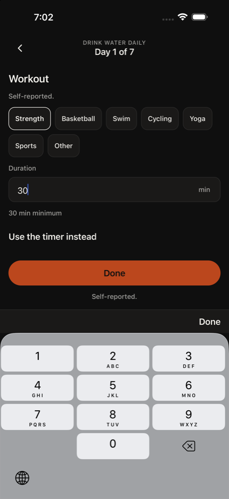
41. other tap Done
Strength is selected and 30 min is entered, which meets the minimum. I'll tap Done to log the workout. The app showed Oct 17 as 1 day secured, but my streak is 0 with Best 1, so yesterday was missed and the streak reset.
neutral · 5458ms
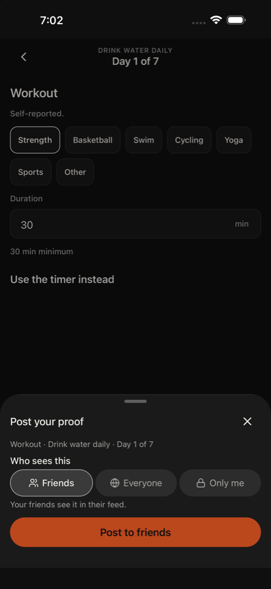
42. challenge tap Post to friends
The post sheet for Workout is up with Friends selected. I'll post to friends to log the workout. About yesterday: the app showed Oct 17 as 1 day secured, but my streak is 0 with Best 1, so Oct 18 was missed and the streak reset.
neutral · 8803ms
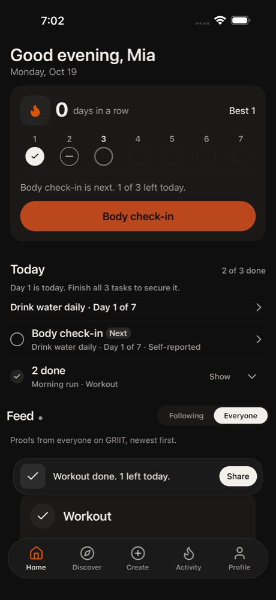
43. home tap Body check-in
Workout is posted and Home shows 2 of 3 done. One task left, the Body check-in, so I'll start it to secure today. About yesterday: the app showed Oct 17 as 1 day secured, but the streak is 0 with Best 1, and day 2 is marked missed, so Oct 18 was missed and the streak reset.
satisfied · 6220ms
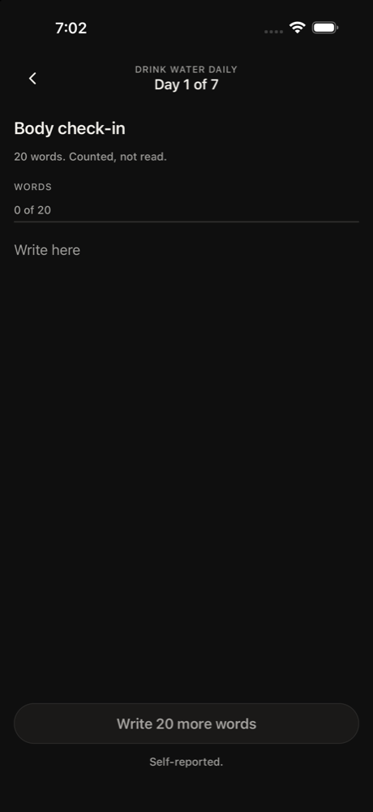
44. task type Write your entry Write here
Body check-in needs 20 words. I'll write a short entry about how I feel to finish the last task today. About yesterday: the app showed Oct 17 as 1 day secured, but the streak is 0 with Best 1, so Oct 18 was missed and the streak reset.
neutral · 19710ms
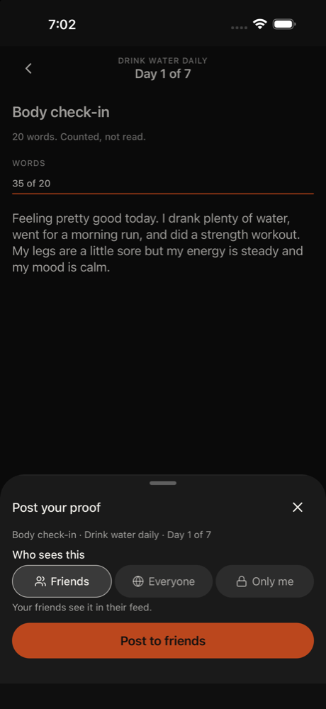
45. challenge tap Post to friends
The Body check-in has 35 of 20 words and the post sheet is open with Friends selected. I'll post to friends to secure today. About yesterday: the app showed Oct 17 as 1 day secured, but the streak is 0 with Best 1, so Oct 18 was missed and the streak reset.
neutral · 8415ms
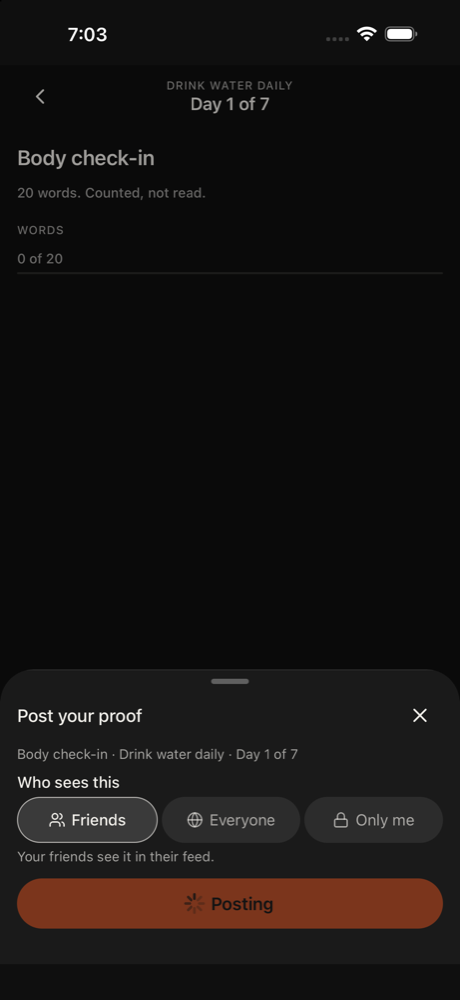
46. challenge wait Posting
The Body check-in post is still in progress and the button says Posting. I'll wait for it to finish before doing anything else. Yesterday: the app showed Oct 17 as 1 day secured, but the streak is 0 with Best 1, so Oct 18 was missed and the streak reset.
Confusion: The word counter behind the sheet shows 0 of 20 and 'Write 20 more words' even though I wrote 35 words.
neutral · 7973ms